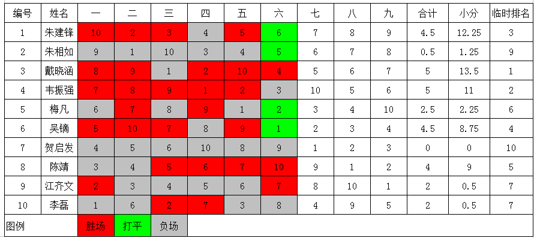

截止六轮成绩表
首页
五子棋新闻
#1 截止六轮成绩表 作者：卯寻月 发表时间：2011-8-21 8:03:47

#2 Re:截止六轮成绩表 作者：傀儡 发表时间：2011-8-21 8:08:13
看来小天老师没有受到路途颠簸的影响啊，还是适应南方啊。
#3 Re:截止六轮成绩表 作者：黑白之巅 发表时间：2011-8-21 8:16:42
地板
澳门仔加油
#4 Re:截止六轮成绩表 作者：萱萱 发表时间：2011-8-21 8:22:03
 缘字加油！！！
缘字加油！！！
#5 Re:截止六轮成绩表 作者：清风明月月 发表时间：2011-8-21 8:41:12
缘字加油！！诚字加油！
#6 Re:截止六轮成绩表 作者：an128 发表时间：2011-8-21 8:46:39
恳请你们在百忙之中把其他几个组的情况也说一下，或者就把对阵单拍个照片发一下，很方便的。
#7 Re:截止六轮成绩表 作者：dyccj 发表时间：2011-8-21 9:21:38
 杀手们加油
杀手们加油
#8 Re:截止六轮成绩表 作者：炫飞冰弦 发表时间：2011-8-21 9:37:17
同6楼，B组什么情况？
#9 Re:截止六轮成绩表 作者：卯寻月 发表时间：2011-8-21 10:07:04
6楼，8楼，我不在现场啊，和你们一样是在网站上了解的情况 ，做个A组的都挺花时间的，B组就没想做了
#10 Re:截止六轮成绩表 作者：小元 发表时间：2011-8-21 11:02:04
比赛冷门不多嘛
#11 Re:截止六轮成绩表 作者：形象哥 发表时间：2011-8-21 11:38:54
白痴狠给力！